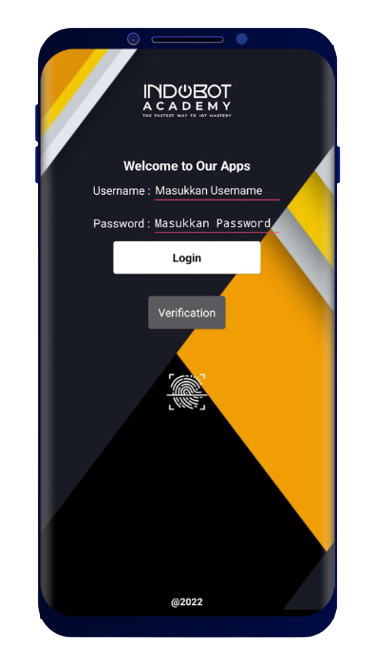

SEKAR IOT
Sekar IoT merupakan implementasi alat di bidang smart energy untuk mengendalikan biaya listrik melalui monitoring dan kontrol pada penggunaan listrik yang dapat dioperasikan secara jarak jauh dan hasil yang real time. Dilengkapi dengan penerapan teknologi muktahir, Produk ini diharapkan dapat membantu orang dalam mengontrol penggunaan listrik mereka kapanpun dan dimanapun.